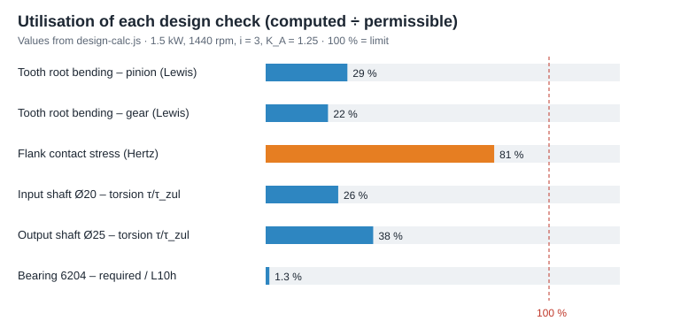
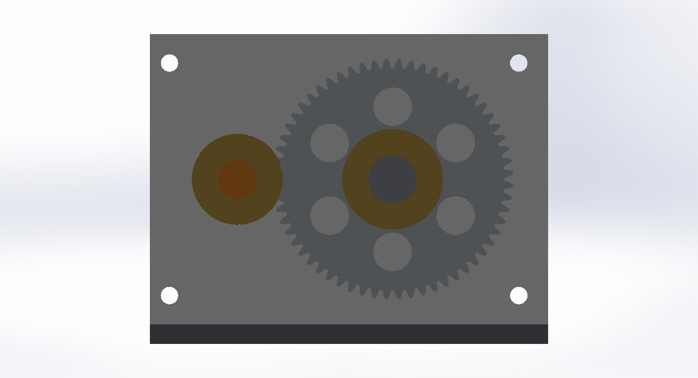
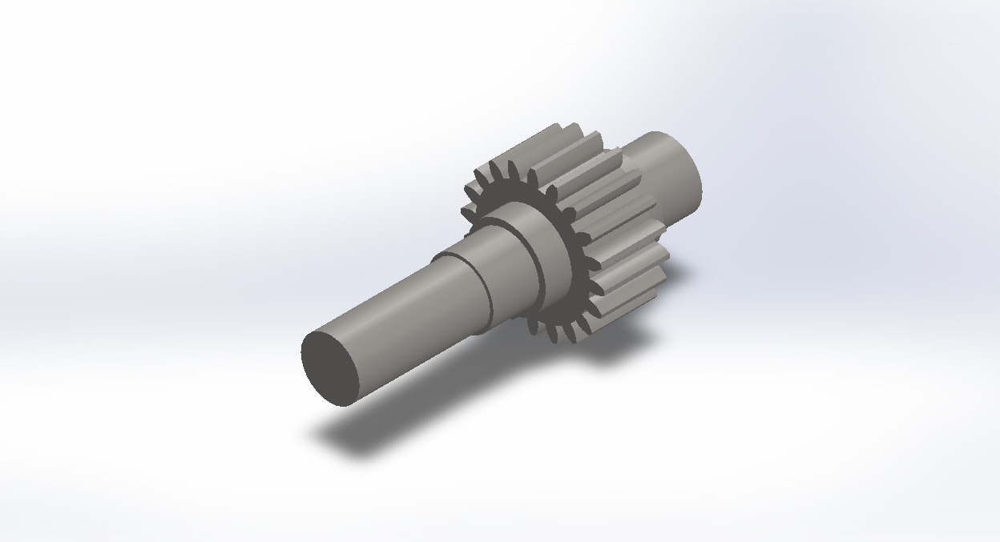
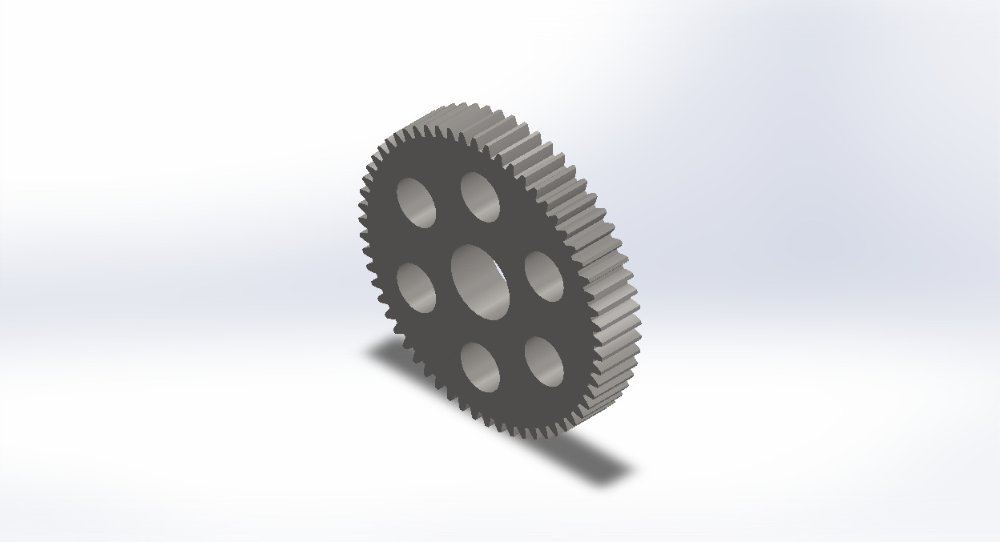
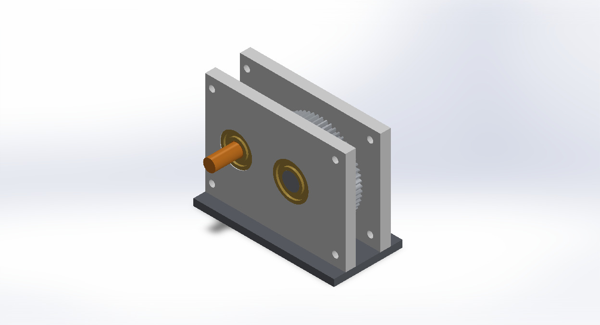

Single-stage spur-gear reducer i = 3Einstufiges Stirnradgetriebe i = 3
A 1.5 kW / 1440 rpm IEC motor drives a conveyor at about 480 rpm. I designed a one-stage spur-gear reducer for this duty and took it from the hand calculation to a checked 3D assembly in SOLIDWORKS, DIN drawings and a manufacturing process plan for the pinion shaft.Ein IEC-Motor mit 1,5 kW / 1440 1/min treibt ein Förderband mit rund 480 1/min an. Ich habe dafür ein einstufiges Stirnradgetriebe ausgelegt – von der Handrechnung über eine geprüfte 3D-Baugruppe in SOLIDWORKS bis zu DIN-Zeichnungen und einem Arbeitsplan für die Ritzelwelle.

Requirements & assumptionsAnforderungen & Annahmen
| Input power and speedAntriebsleistung und Drehzahl | P = 1.5 kW, n₁ = 1440 rpm → T₁ = 9.95 Nm |
|---|---|
| RatioÜbersetzung | i = 3 (z₁ = 20, z₂ = 60) → n₂ = 480 rpm, T₂ = 29.25 Nm (η = 0.98)i = 3 (z₁ = 20, z₂ = 60) → n₂ = 480 1/min, T₂ = 29,25 Nm (η = 0,98) |
| Gear dataVerzahnungsdaten | m = 2 mm, α = 20°, b = 20 mm, a = 80 mm, backlash 0.1 mmm = 2 mm, α = 20°, b = 20 mm, a = 80 mm, Flankenspiel 0,1 mm |
| MaterialWerkstoff | 42CrMo4+QT (1.7225) gears and shafts; EN-GJL-250 walls; S235JR base plate42CrMo4+QT (1.7225) Räder und Wellen; EN-GJL-250 Wände; S235JR Grundplatte |
| Application factorAnwendungsfaktor | K_A = 1.25 (electric motor, conveyor with moderate shocks)K_A = 1,25 (Elektromotor, Förderband mit mäßigen Stößen) |
| Required bearing lifeGeforderte Lagerlebensdauer | L₁₀h ≥ 20,000 h |
1 · Design calculation1 · Auslegungsrechnung
Preliminary sizing (Vorauslegung) with textbook methods, scripted in Node.js: Lewis tooth-root bending with the Barth dynamic factor, Hertzian flank pressure in the simplified ISO 6336 form, torsion-based shaft sizing and the ISO 281 basic bearing life.Vorauslegung mit Lehrbuchverfahren, als Node.js-Skript: Zahnfußbiegung nach Lewis mit dynamischem Faktor nach Barth, Flankenpressung nach Hertz in vereinfachter ISO-6336-Form, Wellenauslegung auf Torsion und nominelle Lagerlebensdauer nach ISO 281.
| CheckNachweis | ResultErgebnis | PermissibleZulässig | UtilisationAuslastung |
|---|---|---|---|
| Tooth-root bending, pinionZahnfußbiegung Ritzel | 72.1 MPa | 250 MPa | 29 % |
| Tooth-root bending, gearZahnfußbiegung Rad | 55.0 MPa | 250 MPa | 22 % |
| Flank contact stress (Hertz)Flankenpressung (Hertz) | 524 MPa | 650 MPa | 81 % (S_H = 1.24) |
| Input shaft Ø20, torsionAntriebswelle Ø20, Torsion | d_min = 12.7 mm | – | 26 % (τ) |
| Output shaft Ø25, torsionAbtriebswelle Ø25, Torsion | d_min = 18.1 mm | – | 38 % (τ) |
| Bearings 6204 / 6205Lager 6204 / 6205 | 1.5 M h / 6.1 M h | 20,000 h | ≈ 1 % |
| Transverse contact ratio ε_αProfilüberdeckung ε_α | 1.67 | ≥ 1.2 | ✓ |
Further values: tangential force F_t = 497 N, pitch-line speed v = 3.0 m/s, K_v = 1.49.Weitere Werte: Umfangskraft F_t = 497 N, Umfangsgeschwindigkeit v = 3,0 m/s, K_v = 1,49.

What the numbers sayWas die Zahlen zeigen
The flank (pitting) strength, not the tooth-root bending, limits this gear pair – at more than twice the bending utilisation. A smaller module would therefore not save much. To carry more power, the face width or the centre distance has to grow, or the gears have to be case-hardened (16MnCr5). The bearings are sized by the shaft diameter, not by the load, so their computed life is very high – typical for small, lightly loaded reducers.Die Grübchentragfähigkeit (Flanke), nicht die Zahnfußbiegung, begrenzt diese Radpaarung – mit mehr als doppelter Auslastung. Ein kleineres Modul würde daher wenig sparen. Für mehr Leistung müssten Zahnbreite oder Achsabstand wachsen oder die Räder einsatzgehärtet werden (16MnCr5). Die Lager sind durch den Wellendurchmesser bestimmt, nicht durch die Last – daher die sehr hohe rechnerische Lebensdauer, typisch für kleine, gering belastete Getriebe.
2 · SOLIDWORKS model2 · SOLIDWORKS-Modell
- Involute teeth from the equations: flank points computed with inv α = tan α − α, tooth thickness reduced for 0.1 mm backlash, then sketched and extruded – no Toolbox or library gear.Evolventenzähne aus den Gleichungen: Flankenpunkte mit inv α = tan α − α berechnet, Zahndicke für 0,1 mm Flankenspiel reduziert, dann skizziert und extrudiert – kein Toolbox- oder Bibliotheksrad.
- Parts: pinion shaft z = 20, gear z = 60 with bore Ø30 and 6 lightening holes, output shaft, spacer sleeves, simplified 6204/6205 bearings, two cast-iron side walls with bearing bores, base plate; materials from the SOLIDWORKS DIN material library.Bauteile: Ritzelwelle z = 20, Rad z = 60 mit Bohrung Ø30 und 6 Erleichterungsbohrungen, Abtriebswelle, Distanzhülsen, vereinfachte Lager 6204/6205, zwei Seitenwände aus Grauguss mit Lagerbohrungen, Grundplatte; Werkstoffe aus der DIN-Werkstoffbibliothek von SOLIDWORKS.
- Assembly at the exact calculated centre distance a = 80 mm; the gear is rotated by half a tooth pitch so the teeth mesh.Baugruppe im exakt berechneten Achsabstand a = 80 mm; das Rad ist um eine halbe Teilung verdreht, damit die Zähne kämmen.
- Interference detection found real modelling errors on the way (missing bearing bores, wrong part positions), which were fixed. The final assembly has 0 interferences, including the meshing teeth.Kollisionsprüfung deckte unterwegs echte Modellierfehler auf (fehlende Lagerbohrungen, falsche Bauteillagen), die behoben wurden. Die finale Baugruppe hat 0 Kollisionen, auch im Zahneingriff.
- Drawings: A3 DIN sheet, first-angle projection (European standard), views with model dimensions, exported to PDF.Zeichnungen: DIN-A3-Blatt, Projektionsmethode 1 (europäisch), Ansichten mit Modellbemaßung, als PDF exportiert.




Plausibility check of the CADPlausibilitätsprüfung des CAD-Modells
| PartBauteil | SOLIDWORKS | Hand estimateHandrechnung | DifferenceAbweichung |
|---|---|---|---|
| Gear z = 60 (with bore and holes)Rad z = 60 (mit Bohrung und Löchern) | 172.9 cm³ | ≈ 174.5 cm³ (pitch-circle disc − bore − holes)≈ 174,5 cm³ (Teilkreisscheibe − Bohrung − Löcher) | −0.9 % |
| Pinion shaftRitzelwelle | 50.6 cm³ | ≈ 51.3 cm³ (pitch disc + cylinders)≈ 51,3 cm³ (Teilkreisscheibe + Zylinder) | −1.3 % |
| Assembly massMasse Baugruppe | 10.2 kg | – | – |
The small differences are expected: the real tooth outline is not exactly the pitch-circle disc.Die kleinen Abweichungen sind erwartet: Die reale Zahnkontur ist nicht exakt die Teilkreisscheibe.
3 · Process plan for the pinion shaft3 · Arbeitsplan der Ritzelwelle
Raw part Ø50 × 110 mm, 42CrMo4 delivered quenched and tempered. Main times from t_h = L·i / (f·n) with n = 1000·v_c / (π·d); for gear hobbing t_h = (b + 2·overrun)·z / (n_hob·f_a).Rohteil Ø50 × 110 mm, 42CrMo4 vergütet geliefert. Hauptzeiten aus t_h = L·i / (f·n) mit n = 1000·v_c / (π·d); beim Wälzfräsen t_h = (b + 2·Überlauf)·z / (n_Fräser·f_a).
| Op.AG | OperationArbeitsgang | MachineMaschine | v_c [m/min] | f | n [rpm1/min] | t_h [min] |
|---|---|---|---|---|---|---|
| 10 | Face both ends and centre-drill (length 104)Plandrehen beidseitig und Zentrieren (Länge 104) | CNC latheCNC-Drehmaschine | 180 | 0.2 mm | 1146 | 0.22 |
| 20 | Rough turn Ø50 → Ø44.5Schruppen Ø50 → Ø44,5 | CNC latheCNC-Drehmaschine | 180 | 0.3 mm | 1146 | 0.30 |
| 30 | Rough turn the steps Ø44.5 → Ø18.5–24.5 (5 passes)Schruppen der Absätze Ø44,5 → Ø18,5–24,5 (5 Schnitte) | CNC latheCNC-Drehmaschine | 180 | 0.3 mm | 1288 | 1.09 |
| 40 | Finish turn tip circle Ø44 h11, steps, bearing seats Ø20 k6, journal Ø18 k6Schlichten Kopfkreis Ø44 h11, Absätze, Lagersitze Ø20 k6, Zapfen Ø18 k6 | CNC latheCNC-Drehmaschine | 220 | 0.1 mm | 2918 | 0.36 |
| 50 | Hob the teeth m = 2, z = 20 (Ø63 single-start hob)Wälzfräsen der Verzahnung m = 2, z = 20 (Wälzfräser Ø63, eingängig) | Gear hobbing machineWälzfräsmaschine | 80 | 1.5 mm/rev1,5 mm/U | 404 | 1.32 |
| 60 | Mill keyway 6 × 3.5 in the journal (solid carbide end mill Ø6, z = 3)Passfedernut 6 × 3,5 im Zapfen fräsen (VHM-Schaftfräser Ø6, z = 3) | Machining centreBearbeitungszentrum | 60 | 0.03 mm/tooth0,03 mm/Zahn | 3183 | 0.20 |
| Total main machining timeGesamte Hauptzeit | 3.49 |

Main machining times only – set-up, tool-change and idle times (as an MTM/REFA time study would add) are not included. The turning operations were later programmed as CNC code: see the CNC turning program.Nur Hauptzeiten – Rüst-, Werkzeugwechsel- und Nebenzeiten (wie sie eine MTM-/REFA-Zeitstudie ergänzen würde) sind nicht enthalten. Die Drehoperationen wurden anschließend als CNC-Programm umgesetzt: siehe CNC-Drehprogramm.
LimitationsGrenzen
- Preliminary sizing, not a full DIN 3990 / ISO 6336 proof: no K_Hβ/K_Fβ load-distribution factors, no profile shift or tip relief, no fatigue/notch check of the shafts (e.g. DIN 743), no lubrication or heat-balance check.Vorauslegung, kein vollständiger Nachweis nach DIN 3990 / ISO 6336: keine Breitenfaktoren K_Hβ/K_Fβ, keine Profilverschiebung oder Kopfrücknahme, kein Dauerfestigkeits-/Kerbnachweis der Wellen (z. B. DIN 743), keine Schmierungs- oder Wärmebilanzprüfung.
- The tooth model has no root fillet (straight root lines); bearings are simplified rings, not catalogue models; the keyway is in the process plan only, not in the 3D model.Das Zahnmodell hat keine Fußrundung (gerade Fußlinien); Lager sind vereinfachte Ringe, keine Katalogmodelle; die Passfedernut ist nur im Arbeitsplan, nicht im 3D-Modell.
- The housing is a simplified open frame (two walls plus base plate), not a closed oil-tight casing.Das Gehäuse ist ein vereinfachter offener Rahmen (zwei Wände und Grundplatte), kein geschlossenes, öldichtes Gehäuse.
- SOLIDWORKS Student Edition: the CAD files open only in educational versions; the drawings carry the educational watermark.SOLIDWORKS Student Edition: Die CAD-Dateien öffnen sich nur in Bildungsversionen; die Zeichnungen tragen das Bildungs-Wasserzeichen.
DownloadsDownloads
What I learnedWas ich gelernt habe
- Which failure mode really limits a gear pair – here pitting, not tooth-root bending – and which design levers follow from it.Welche Versagensart eine Radpaarung wirklich begrenzt – hier Grübchen, nicht Zahnfußbruch – und welche Konstruktionshebel daraus folgen.
- Building involute gears from the equations instead of a library, and checking CAD against hand calculations (volumes within 1.3 %).Evolventenräder aus den Gleichungen statt aus einer Bibliothek aufbauen und CAD gegen Handrechnung prüfen (Volumina innerhalb 1,3 %).
- Using interference detection as a real design check: it found missing bearing bores and wrong part positions.Kollisionsprüfung als echten Konstruktionscheck nutzen: Sie fand fehlende Lagerbohrungen und falsche Bauteillagen.
- Connecting design and manufacturing: from the drawing to a process plan with calculated main times.Konstruktion und Fertigung verbinden: von der Zeichnung zum Arbeitsplan mit berechneten Hauptzeiten.
Follow-up projects on the same gearbox: CNC turning program for the pinion shaft and efficiency test bench concept.Folgeprojekte zum selben Getriebe: CNC-Drehprogramm für die Ritzelwelle und Konzept für einen Wirkungsgrad-Prüfstand.